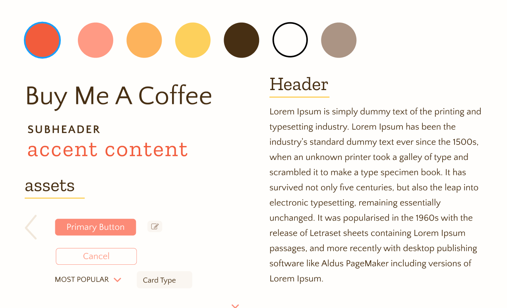

Buy Me a Coffee
Nov 2019 | UI/UX
This was an interesting exercise in design where we created a redesign of a webpage...
without ever looking at the original webpage! Given a couple startups with an accompanying
description, we chose Buy Me a Coffee, which was described as "a platform for creators to receive
monetary support from their fans." Basically, you can think of it as Patreon v2.0 with a focus on
microtransactions.
This was a team project! Meet the gang & what they were in charge of:
- Katherine Sang — prototyping, interaction
- Julie Wang — sketching, prototyping
- Dain Woods — user testing, writing
- Me — prototyping, illustrating
Sketching
The initial sketches were created by the lovely Julie Wang, who made 4 sets
of conceptual sketches.
Sketch #1
Sketch #2
Sketch #3
Sketch #4
After discussing each design, we decided to go with sketch #1 because the home page
best represented the diverse target audiences of users (artists, podcasters, educators),
while the profile page enabled the user to engage with their fans through posts and a
gallery of their content.
We ruled out Sketch #2 and #4 because they both attempted to recommend personal suggestions to users,
which conflicts with the original goal of the startup. Buy Me a Coffee is not a platform for user
entertainment, but a platform for charitable donations.
Additionally, a recommendation system could negatively affect the customer base, as creators have to feel
incentivized that their profiles might actually be seen. In that sense, sketch #1 allows diverse categories of creators
to be presented without algorithmic bias, allowing more fairness in terms of what is advertised!
Meanwhile, we also ruled out sketch #3 because we thought the emphasis on
monetary statistics was too heavy for a the landing page.
Style Sheet
This was the fun part! The first thing we did to get a feel for our design was
create a style sheet, which looks like this:

This was actually Julie and Katherine's idea. I had never thought about making
a style sheet before prototyping, and after doing so I highly recommend it!
This was another opportunity to learn from the practices of other designers.
For our font combination, we picked Quattrocentro Sans (sans serif) and Zilla Slab (slab serif),
as they make a playful, light impression.
For our color palette, we were coffee inspired (black, white, brown), with
some pastels thrown in for accents.
Illustrations
We also decided that we wanted to include illustrations to represent different
tiers of donation. So, for example, $1 might be a coffee icon, while $10 might be
a cake. I had the pleasure of making the illustrations in Adobe Illustrator!
We represented the donation tiers as food because showing the donors that they are buying
the creator a concrete item (i.e. a sandwich for lunch) encourages empathy and helps donors
conceptualize the financial impact of their donation.
The gift box is the odd one out, but there's a reason for that— it represents
a custom donation that the donor can choose.
Prototyping & Crit
Julie, Katherine, and I created the high fidelity mockups in Figma. We prioritized a
minimalistic design and tried to ensure that a user would not be confused by our layout.
After creating our initial mockup, we presented our design to other students at Brown to receive
critical feedback that we could use to improve our design. One of the suggestions
was to show the name and profile of the creator you are donating to
so contributors 1) can easily confirm they are indeed donating to the right person,
and 2) invoke empathy by reminding them they are contributing to the livelihood of
one of their favorite creators. We really liked this idea, so we went back and changed
our prototype to involve the user profile throughout the donation process!
We finished up by polishing our mockup and defining the interactions between pages.
Here are some key screenshots from the final mockup:
If you'd like to see the full, interactive mockup click here!
(Note that you might have to press 'R' on your keyboard to reset and start from the landing page.)
User Testing
We honestly didn't do a lot of user testing, but we did get feedback from 3 users on UserTesting.com.
In general, there didn't seem to be much confusion about how to use the website, but some of the tasks
took longer than they ideally should have. We think these results were slightly skewed because
there were some technical issues where two of the users were
not able to scroll, likely causing the task execution time to increase. We weren't able to resolve the issue
as we could not figure out if this was occuring on UserTesting.com's end or Figma's end, so we had to roll
with these results.
Thankfully, two of the users gave us high ratings of 9 and 10, so we were very happy with that! Ideally, we would
do more user testing if this was a real, deployable user application, but we got a little taste
of what it would be like to do UI/UX research through this process.
Reflection
At the end of the project, we were able to look at the actual website! I'll just provide a screenshot here if you
don't feel like navigating to their website:
We were all really surprised at how different it was! During our design we hyper-focused on the coffee aspect,
but you can see in the screenshot above that they didn't really use coffee as their motif.
We emailed our design to Buy Me a Coffee, expecting no reply, but to our surprise we received one from the CEO,
Jijo Sunny! It was very touching to receive an email back from a startup, because I would think they
are too busy to respond to students.
Overall, this project was an unique challenge in using our imagination, and a worthwhile exercise in website design!
Though this design will never become a reality, I felt that this project gave me new experiences in the design process,
and how refine your projects after receiving feedback.